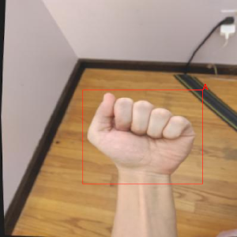
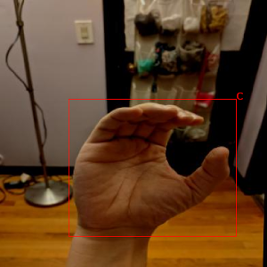

Yolov5 is a family of object detection architectures and models pretrained on the COCO dataset, and represents Ultralytics open-source research into future vision AI methods. Custom docker images with additional tools are available from here:
https://github.com/waikato-datamining/pytorch/tree/master/yolov5
Prerequisites
Make sure you have the directory structure created as outlined in the Prerequisites.
Data
In this example, we will use the American Sign Language Letters dataset, which consists of sets of images of hands, one per letter in the English alphabet (26 labels).
Download the dataset from the following URL into the data directory and extract it:
Once extracted, rename the voc directory to sign-voc.
Now we have to convert the format from VOC XML into YOLO. We can do this by using the wai.annotations library. At the same time, we can split the dataset into train, validation and test subsets.
From within the applied_deep_learning directory, run the following command:
docker run -u $(id -u):$(id -g) \
-v `pwd`:/workspace \
-t waikatoufdl/wai.annotations:latest \
wai-annotations convert \
from-voc-od \
-i "/workspace/data/sign-voc/*.xml" \
to-yolo-od \
-o /workspace/data/sign-yolo-split \
--labels /workspace/data/sign-yolo-split/labels.txt \
--labels-csv /workspace/data/sign-yolo-split/labels.csv \
--split-names train val test \
--split-ratios 70 15 15
NB: At the time of writing, the yolo plugin for wai.annotations still had a bug which
creates empty top-level directories when splitting datasets via --split-names. In the
sign-yolo-split directory, you can safely remove the train, test and val directories,
since the actual splits are below the images and labels directories:
rm -fR data/sign-yolo-split/train data/sign-yolo-split/test data/sign-yolo-split/val
Finally, download the dataset.yaml file and place it in the sign-yolo-split
directory. It contains information about the dataset directory, the splits and the class labels.
Since the labels can come out in a random order, you need to update the labels in the yaml file
with the ones that got output in the labels.txt file. You can automatically quote the
comma-separated list using the following command:
cat data/sign-yolo-split/labels.txt | sed s/,/\',\'/g | sed s/^/\'/g | sed s/$/\'/g
Training
For training, we will use the following docker image:
waikatodatamining/pytorch-yolov5:2022-05-31_cuda11.1
If you do not have a GPU, you can use the CPU-only image:
waikatodatamining/pytorch-yolov5:2022-01-21_cpu
The training script is called yolov5_train, for which we can invoke the help screen as follows:
docker run -t waikatodatamining/pytorch-yolov5:2022-05-31_cuda11.1 yolov5_train --help
Instead of using config files, we can just tweak parameters via command-line options.
However, we still need to download a base model to use for training. Yolov5 offers different
models, which differ in speed and accuracy. We will use the medium one called yolov5m.pt
from the v6.0 release:
https://github.com/ultralytics/yolov5/releases/download/v6.0/yolov5m.pt
Download it and place it in the models directory.
It is good practice creating a separate sub-directory for each training run, with a directory name that hints at
what dataset and model were used. So for our first training run, which will use mainly default parameters, we will
create the following directory in the output folder:
sign-yolov5
NB: Yolov5 will automatically append a number to the output directory if said directory already exists (in order not to overwrite any existing models/outputs).
Since the image size should be a multiple of 32, we use 416 for this experiment.
Kick off the training with the following command:
docker run \
-u $(id -u):$(id -g) \
--shm-size 8G \
--gpus=all \
-v `pwd`:/workspace \
-t waikatodatamining/pytorch-yolov5:2022-05-31_cuda11.1 \
yolov5_train \
--img 416 \
--batch 16 \
--epochs 20 \
--data /workspace/data/sign-yolo-split/dataset.yaml \
--weights /workspace/models/yolov5m.pt \
--project /workspace/output \
--name sign-yolov5
Exporting to ONNX
Before we can use our trained model, we will need to export it to ONNX format
using the yolov5_export script:
docker run \
-u $(id -u):$(id -g) \
--gpus=all \
-v `pwd`:/workspace \
-t waikatodatamining/pytorch-yolov5:2022-05-31_cuda11.1 \
yolov5_export \
--weights /workspace/output/sign-yolov5/weights/best.pt \
--img-size 416 416 \
--include onnx
This will create a file called best.onnx in the output directory.
Predicting
Using the yolov5_predict_poll script, we can batch-process images placed in the predictions/in directory
as follows (e.g., from our test subset):
docker run \
-u $(id -u):$(id -g) \
--gpus=all \
-v `pwd`:/workspace \
-t waikatodatamining/pytorch-yolov5:2022-05-31_cuda11.1 \
yolov5_predict_poll \
--model /workspace/output/sign-yolov5/weights/best.onnx \
--data /workspace/data/sign-yolo-split/dataset.yaml \
--image_size 416 \
--prediction_in /workspace/predictions/in \
--prediction_out /workspace/predictions/out
Notes
- The predictions get output in ROI CSV format.
- You can view the predictions with the ADAMS Preview browser and, e.g., the ObjectLocationsFromSpreadSheet
handler. You need to configure this generic handler via the
...button, entering the columns for the bounding box (x0,y0,x1,y1) and the label (label_str) of thereader(ObjectLocationsSpreadSheetReader).
Example prediction

